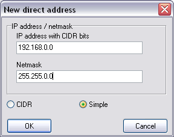

Falls sie FreeCap in einem privaten Netzwerk (LAN) benutzen könnten diese Einstellungen nützlich sein:
 Hier können Sie Adressen angeben für die der Proxy umgangen wird. Dies werden üblicherwise Computer innerhalb ihres Netzwerkes sein. Da das Netzwerk viele Adressen umfassen kann können Sie hier Adressbereiche eingeben:
CIDR-notation.
Hier können Sie Adressen angeben für die der Proxy umgangen wird. Dies werden üblicherwise Computer innerhalb ihres Netzwerkes sein. Da das Netzwerk viele Adressen umfassen kann können Sie hier Adressbereiche eingeben:
CIDR-notation.
 Zum Beispiel "192.168.0.0/16" bedeuted daß für alle adressen von 192.168.0.1 bis 192.168.254.254 der Proxy nicht benutzt wird.
Die "/16"heißt daß die letzten beiden Zahlen in den IP Adressen unbestimmt sind, was dasselbe ist wie eine Subnetzmaske von "255.255.0.0"
Zum Beispiel "192.168.0.0/16" bedeuted daß für alle adressen von 192.168.0.1 bis 192.168.254.254 der Proxy nicht benutzt wird.
Die "/16"heißt daß die letzten beiden Zahlen in den IP Adressen unbestimmt sind, was dasselbe ist wie eine Subnetzmaske von "255.255.0.0"

Wenn nötig fragen Sie Ihren Netzwerkadministrator um Rat über Ihre LAN Adressen.
|
|